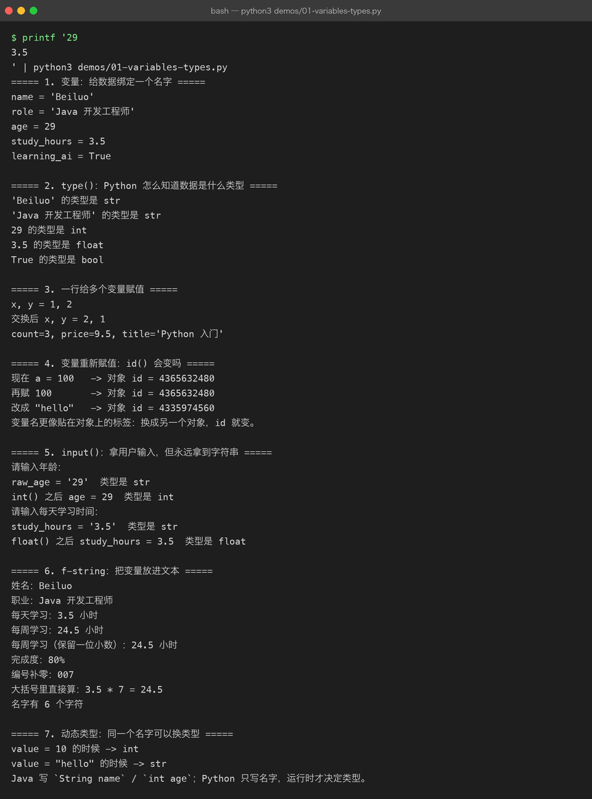
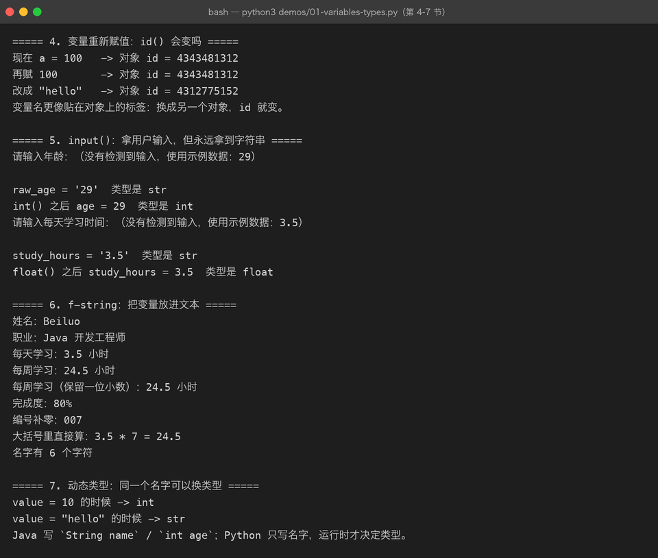

Lesson 01 — 用 Python 做第一个小项目：AI Engineer 学习档案生成器
AI Engineer Journey · Project 01 — Python AI CLI Assistant 学习方式：Project-Based Learning【项目驱动学习】 本章目标：不单独背 Python 语法，而是在完成一个真实小项目的过程中学会 Python 基础。
1. 这一章我们到底要做什么？
我们先不学一堆 Python 语法。
假设我们刚刚开始学习 AI，现在想做一个最简单的小工具：
输入自己的学习信息，程序帮我们生成一份 AI Engineer 学习档案。
最终运行效果：
$ python main.py
========== AI Engineer 学习档案 ==========
姓名：Beiluo
当前职业：Java 开发工程师
每天学习时间：3.5 小时
当前方向：Python + AI + LLM
目标：
成为 AI Engineer
===========================================听起来很简单。
但为了完成这个小项目，我们自然会遇到：
怎么保存姓名？
怎么保存年龄？
怎么保存学习时间？
怎么让用户输入？
怎么输出？
学习时间为什么是数字？
Python 怎么知道变量是什么类型？
怎么把变量放进一段文本？于是我们开始学习：
变量
数据类型
input()
print()
type()
类型转换
f-string这就是这一章的学习方式：
先有项目问题，再学习解决问题所需要的 Python 知识。
2. 项目地图
我们的第一个项目非常小，但会逐步升级。
Project 00
AI Engineer 学习档案生成器
v0.1
写死数据
↓
v0.2
让用户输入
↓
v0.3
处理数字
↓
v0.4
格式化输出
↓
v0.5
检查数据类型
↓
v1.0
完成学习档案这条路线很重要。
以后真正开发 AI 应用也是一样：
先有需求
↓
先做最小版本
↓
遇到问题
↓
补知识
↓
继续升级3. 项目 v0.1：先把结果做出来
第一版我们甚至不学习 input()。
先写一个最简单的程序：
print("========== AI Engineer 学习档案 ==========")
print("姓名：Beiluo")
print("当前职业：Java 开发工程师")
print("每天学习时间：3.5 小时")
print("当前方向：Python + AI + LLM")
print("目标：成为 AI Engineer")
print("===========================================")运行：
========== AI Engineer 学习档案 ==========
姓名：Beiluo
当前职业：Java 开发工程师
每天学习时间：3.5 小时
当前方向：Python + AI + LLM
目标：成为 AI Engineer
===========================================很好。
我们的第一个版本已经能运行了。
但是马上出现一个问题：
如果换一个人使用怎么办？
现在所有内容都是写死的。
4. 第一个问题：程序怎么保存数据？
例如我们希望：
姓名 → Beiluo
职业 → Java 开发工程师
学习时间 → 3.5
方向 → Python + AI + LLM我们需要给这些数据起名字。
于是出现 Python 最基础的概念：
变量 Variable【变量】
把代码改成：
name = "Beiluo"
role = "Java 开发工程师"
study_hours = 3.5
direction = "Python + AI + LLM"
print(name)
print(role)
print(study_hours)
print(direction)这里真正发生的事情是：
name
↓
"Beiluo"
role
↓
"Java 开发工程师"
study_hours
↓
3.5
direction
↓
"Python + AI + LLM"变量的作用可以先简单理解为：
给数据绑定一个名字，后面可以通过这个名字使用数据。
5. Java 开发者怎么理解变量？
Java：
String name = "Beiluo";
double studyHours = 3.5;Python：
name = "Beiluo"
study_hours = 3.5这里最大的区别之一：
Java 通常显式写类型：
String name
double studyHoursPython 通常直接：
name
study_hoursPython 会根据右侧对象判断类型。
所以：
name = "Beiluo"Python 知道这是字符串。
study_hours = 3.5Python 知道这是浮点数。
6. 第二个问题：Python 怎么知道数据是什么？
现在项目有：
name = "Beiluo"
age = 29
study_hours = 3.5
learning_ai = True它们的数据明显不一样。
所以我们需要知道：
这些数据到底是什么类型？
使用：
type()例如：
print(type(name))
print(type(age))
print(type(study_hours))
print(type(learning_ai))输出类似：
<class 'str'>
<class 'int'>
<class 'float'>
<class 'bool'>于是我们第一次遇到了 Python 的基本类型。
7. 项目中最常见的几种类型
我们只学项目当前需要的。
str —— String【字符串】
文本：
name = "Beiluo"
role = "Java 开发工程师"int —— Integer【整数】
整数：
age = 29float —— Floating Point【浮点数】
带小数：
study_hours = 3.5bool —— Boolean【布尔值】
只有两个值：
True
False例如：
learning_ai = True
has_finished_python = False8. 第三个问题：让程序真的能给别人用
当前代码：
name = "Beiluo"
role = "Java 开发工程师"
study_hours = 3.5还是写死。
我们希望：
请输入姓名：
请输入职业：
请输入每天学习时间：
请输入学习方向：这时候就需要：
input()
例如：
name = input("请输入你的姓名：")运行：
请输入你的姓名：Beiluo用户输入：
Beiluo那么：
name就保存了：
Beiluo9. 第一个真正能交互的版本
把项目升级：
name = input("请输入你的姓名：")
role = input("请输入你的职业：")
study_hours = input("请输入每天学习时间：")
direction = input("请输入当前学习方向：")
print(name)
print(role)
print(study_hours)
print(direction)现在它已经不是一个静态脚本了。
它变成：
程序
↓
等待用户输入
↓
得到数据
↓
保存数据
↓
继续执行这就是最基本的程序交互。
10. input() 的第一个坑
现在做个实验：
study_hours = input("每天学习几小时：")
print(study_hours)
print(type(study_hours))输入：
3.5你可能会以为：
study_hours = 3.5但实际上：
<class 'str'>为什么？
因为：
input()默认返回字符串。
即使用户输入：
29程序默认得到的是：
"29"而不是：
29这两个东西不一样。
11. 项目开始真正遇到类型转换问题
现在我们的需求是：
每天学习时间以后可能需要做数学计算。
比如：
每天 3.5 小时
一个星期大约学习多少小时？如果：
study_hours = "3.5"它只是字符串。
我们需要把它变成数字。
使用：
float()于是：
study_hours = float(
input("请输入每天学习时间：")
)现在：
print(type(study_hours))会得到：
<class 'float'>于是：
用户输入
↓
"3.5"
↓
float()
↓
3.512. 如果是年龄呢？
年龄是整数：
age = int(input("请输入年龄："))于是：
用户输入：
29
得到：
29类型：
int13. 类型转换
项目里现在出现了几个常见函数：
int()
float()
str()
bool()例如：
age = int("29")
study_hours = float("3.5")你可以暂时记成：
字符串
↓
int()
↓
整数或者：
字符串
↓
float()
↓
浮点数14. 第四个问题：输出太难看了
现在我们的程序可能写成：
print(name)
print(role)
print(study_hours)
print(direction)运行：
Beiluo
Java 开发工程师
3.5
Python + AI + LLM虽然有内容，但用户体验很差。
我们需要把变量和文字组合起来。
于是学习：
f-string【格式化字符串】
写：
print(f"姓名：{name}")
print(f"职业：{role}")
print(f"每天学习时间：{study_hours} 小时")
print(f"当前方向：{direction}")这里：
f"姓名：{name}"意思就是：
在字符串中把
name当前保存的值插入进去。


15. 最终项目 v1.0
现在，我们把刚刚遇到的所有问题组合起来：
name = input("请输入你的姓名：")
age = int(input("请输入你的年龄："))
role = input("请输入你的职业：")
study_hours = float(input("请输入每天学习时间："))
direction = input("请输入当前学习方向：")
print("\n========== AI Engineer 学习档案 ==========")
print(f"姓名：{name}")
print(f"年龄：{age}")
print(f"职业：{role}")
print(f"每天学习时间：{study_hours} 小时")
print(f"当前学习方向：{direction}")
print("\n目标：成为 AI Engineer")
print("===========================================")例如：
请输入你的姓名：Beiluo
请输入你的年龄：29
请输入你的职业：Java 开发工程师
请输入每天学习时间：3.5
请输入当前学习方向：Python + AI + LLM
========== AI Engineer 学习档案 ==========
姓名：Beiluo
年龄：29
职业：Java 开发工程师
每天学习时间：3.5 小时
当前学习方向：Python + AI + LLM
目标：成为 AI Engineer
===========================================现在我们已经完成第一个真正的 Python 小项目。
16. 回头看：我们到底学了什么？
注意：
我们不是先学：
变量
类型
input
print
f-string然后再做项目。
而是：
项目需求
↓
我要保存数据
↓
学习变量
↓
我要知道数据是什么
↓
学习类型
↓
我要接收用户输入
↓
学习 input()
↓
我要进行数学计算
↓
发现 input() 是字符串
↓
学习 int() / float()
↓
我要漂亮地输出
↓
学习 f-string这就是：
Project-Based Learning
真正的项目驱动。
17. 本章知识地图
现在把这几个知识点串起来：
AI Engineer 学习档案
│
↓
用户输入数据
│
↓
input()
│
↓
变量
│
↓
数据类型判断
│
┌─────────┼─────────┐
↓ ↓ ↓
str int float
│ │ │
└─────────┼─────────┘
↓
类型转换
│
↓
f-string
│
↓
print()
│
↓
最终输出联系描述
用户首先通过 input() 向程序提供数据，Python 把这些数据保存到变量中。由于不同输入具有不同的数据类型，我们需要理解 str、int、float 和 bool，并在需要进行数学运算时使用 int() 或 float() 完成类型转换。最后通过 f-string 把变量组合成用户能够理解的文本，并使用 print() 输出。整个过程形成了一个最基本的“输入 → 处理 → 输出”程序闭环。
这也是后续 AI 应用的基本结构：
用户
↓
输入
↓
程序处理
↓
AI / API
↓
输出18. Java → Python 的迁移
现在不需要死记完整 Python 语法，只先建立这个映射。
| 项目需求 | Java | Python |
|---|---|---|
| 文本 | String | str |
| 整数 | int | int |
| 小数 | double | float |
| 布尔值 | boolean | bool |
| 获取输入 | Scanner | input() |
| 输出 | System.out.println() | print() |
| 字符串格式化 | 拼接 / Formatter | f-string |
| 字符串转整数 | Integer.parseInt() | int() |
| 字符串转小数 | Double.parseDouble() | float() |
注意：
这些只是帮助你迁移编程思维，不意味着 Java 和 Python 的底层机制完全一样。
19. 一个重要认识：动态类型
看看：
x = 10
print(type(x))
x = "hello"
print(type(x))第一次：
int第二次：
str所以 Python 属于：
动态类型语言（Dynamically Typed Language）
简单理解：
变量在写代码的时候通常不用声明固定类型，运行时根据绑定的对象决定类型。
但是：
动态类型 ≠ 没有类型。
10 还是 int。
"hello" 还是 str。
20. 本章第一个工程习惯
以后不要一看到代码就背。
先问：
这个项目要解决什么问题？
↓
需要保存什么数据？
↓
这些数据是什么类型？
↓
用户数据从哪里来？
↓
数据需要怎么处理？
↓
最后输出什么？这就是工程思维的开始。
21. 小实验：自己修改需求
现在项目已经可以用了。
我们增加一个需求：
根据每天学习时间，计算一周总学习时间。
新增：
weekly_hours = study_hours * 7然后：
print(f"预计每周学习时间：{weekly_hours} 小时")整个代码变成：
name = input("请输入你的姓名：")
age = int(input("请输入你的年龄："))
role = input("请输入你的职业：")
study_hours = float(input("请输入每天学习时间："))
direction = input("请输入当前学习方向：")
weekly_hours = study_hours * 7
print("\n========== AI Engineer 学习档案 ==========")
print(f"姓名：{name}")
print(f"年龄：{age}")
print(f"职业：{role}")
print(f"每天学习时间：{study_hours} 小时")
print(f"预计每周学习时间：{weekly_hours} 小时")
print(f"当前学习方向：{direction}")
print("\n目标：成为 AI Engineer")
print("===========================================")注意：
我们没有专门开一节讲“算术运算”。
因为项目需求自然让你遇到了：
study_hours * 7后面真正需要更多运算的时候，再继续学。
22. 小挑战
现在不要看上面的最终代码。
自己重新写一个：
AI Engineer Profile v2
要求用户输入：
姓名
当前职业
Java 工作年限
每天学习小时数
当前学习方向输出：
========== AI Engineer Profile ==========
姓名：
职业：
Java 工作年限：
每天学习：
每周预计学习：
学习方向：
最终目标：
AI Engineer
==========================================要求：
Java 工作年限 → int
每天学习小时数 → float
每周学习时间 = 每天学习时间 × 7
使用 f-string
不能把用户信息写死23. 主动回忆
完成代码以后，不要马上看答案。
回答：
Q1
为什么：
age = input("年龄：")得到的是 str？
Q2
为什么：
age = int(input("年龄："))就可以得到整数？
Q3
下面：
study_hours = 3.5为什么是 float？
Q4
为什么 Python 可以：
x = 10
x = "hello"而 Java 的变量声明方式通常不同？
Q5
下面：
print(f"姓名：{name}")为什么需要 f？
Q6
从项目角度解释：
变量、类型、input、类型转换、f-string、print 之间是什么关系？
不要背定义，用“我们的学习档案项目”来解释。
24. 本章练习分级
Level 1：跟做
把本章项目完整运行一次。
Level 2：修改
增加：
当前年龄
预计每周学习时间Level 3：独立实现
关闭课程代码后，自己重新实现：
AI Engineer ProfileLevel 4：需求变化
新增：
目标职位
最想学习的技术不用修改整体程序结构也能完成需求。
Level 5：解释
能够向一个完全不会 Python 的人解释：
为什么
input()得到的是字符串，而我们又要使用int()或float()？
如果能够用自己的语言解释清楚，这一章才算真正掌握。
25. 本章在 AI Engineer Journey 中的位置
Project 01 — Python AI CLI Assistant
Lesson 01
变量 / 类型 / 输入输出
↓
Lesson 02
List / Dict / JSON / AI Messages
↓
Lesson 03
Condition / Loop
↓
Lesson 04
Function
↓
...
↓
Python AI CLI Assistant当前：
Lesson 01
✅ 完成
Lesson 02
⬜ 下一章26. 与最终 AI 项目的连接
现在的项目：
用户
↓
input()
↓
Python
↓
print()很快会升级成：
用户
↓
Python
↓
messages
↓
LLM API
↓
大模型
↓
Response
↓
Python
↓
用户再往后：
用户
↓
Vue
↓
FastAPI
↓
LLM
↓
RAG
↓
Agent
↓
Tool
↓
Model所以这不是“学完以后没用的 Python 基础”。
它是后面整个 AI 工程链的第一层。
27. 本章文件建议
本章最终在 GitHub 中：
projects/
└── 01-python-ai-cli/
└── 01-variables/
├── README.md
├── lesson.md
├── demo/
│ ├── 01-basic-profile.py
│ ├── 02-input-profile.py
│ └── 03-learning-profile.py
└── exercises/
└── README.md其中：
lesson.md
就是本章正式课程。
demo/
保存随着课程逐步演进的代码：
01-basic-profile.py
→ 写死版本
02-input-profile.py
→ 加入 input
03-learning-profile.py
→ 完整版本这个设计非常重要。
不要只保存最后答案。
把项目从 v0.1 → v1.0 的演进过程保留下来。
这以后会成为你 GitHub 项目和自媒体内容非常有价值的一部分。
28. 本章总结
这一章我们不是为了记住：
str
int
float
bool
input
print而是通过：
AI Engineer 学习档案生成器
亲手经历了：
项目需求
↓
发现需要保存数据
↓
变量
↓
发现数据类型不同
↓
类型
↓
发现需要用户输入
↓
input()
↓
发现输入默认是字符串
↓
int() / float()
↓
发现输出需要组合变量
↓
f-string
↓
print()
↓
完成项目这就是我们整个 AI Engineer Journey 后续都要遵循的学习方式：
不要为了学知识而学知识，而是先做项目；项目遇到问题，再学习解决问题所需要的知识。
下一章自然进入：
Lesson 02 — List / Dict → JSON → AI Messages
我们会继续升级这个思路：
“学习档案里只有一个人的数据不够了，我需要保存很多数据、保存多条消息。”
于是我们自然会遇到：
List
↓
Dict
↓
List + Dict
↓
JSON
↓
messages
↓
system / user / assistant
↓
第一次真正接触 LLM API 数据结构这才是 Python 正式迈向 AI 开发的第一座桥。